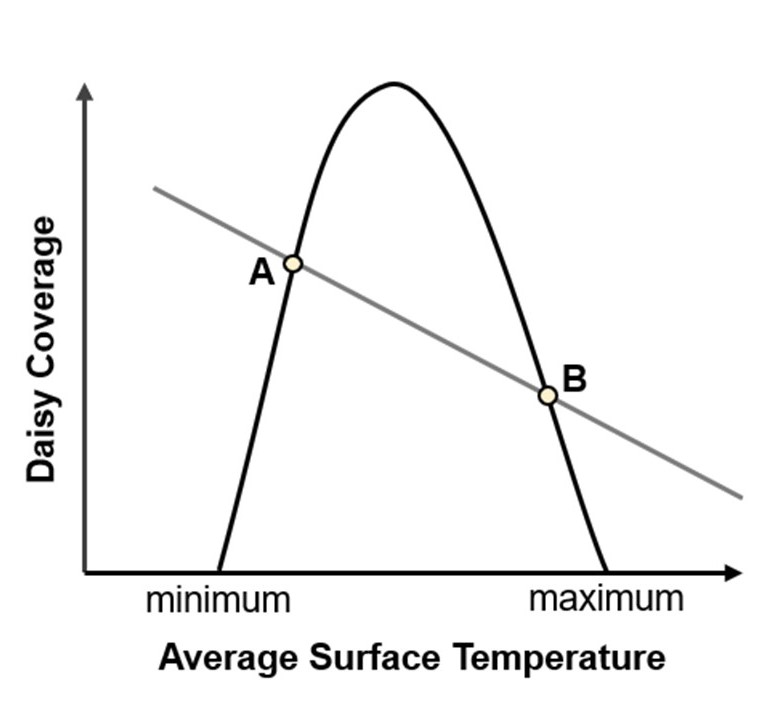
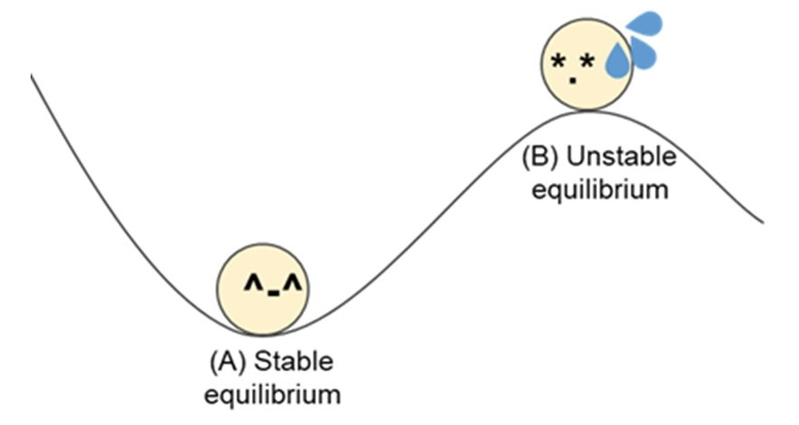
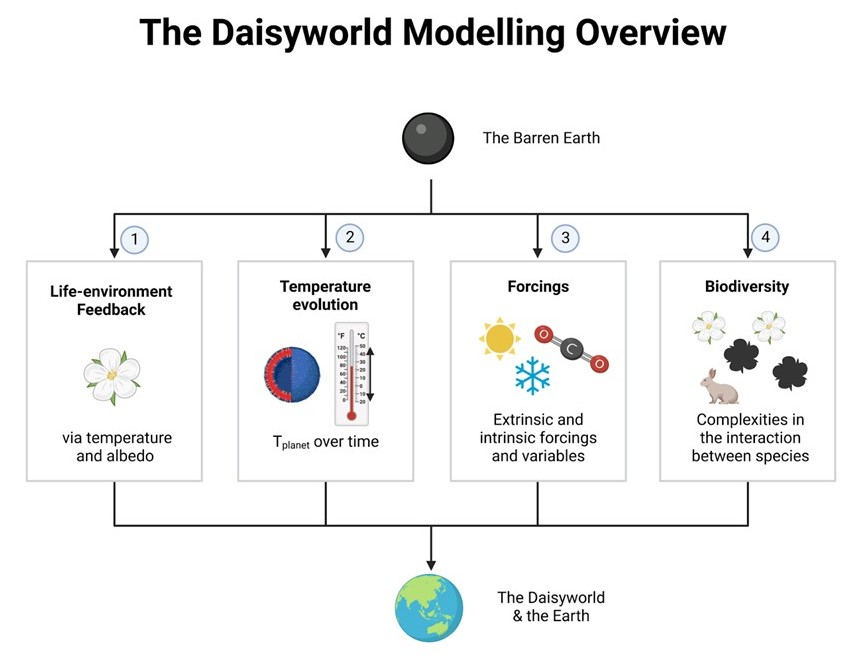
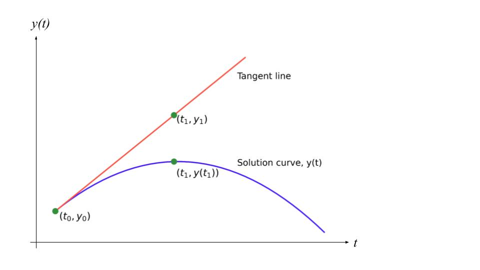

3 How does life affect the planet’s temperature stability?
The Daisyworld
OVERVIEW
LEARNING OBJECTIVES
- Able to understand the characteristics of black and white daisies
- Able to interpret the outcomes of the Daisyworld model on the temperature of a planet and how it supports the Gaia hypothesis
- Understand how factors (e.g. daisy growth rate, daisy local temperature, daisy coverage, available ground, planet albedo, planet temperature) affect the Daisyworld
- Recognise the strengths of simple modelling to observe numerous interactions within a system and appreciate its applications in real life
PREAMBLE
In a simplistic Daisyworld model, we are only interested in black and white daisies, both of which have distinct impacts on the planet. The growth rate of daisies depends on the planet’s temperature, which in turn is modified by the daisies as they absorb differing amounts of solar radiation. As the daisies begin growing over time, the amount of available ground also decreases with time. We will discuss the single-colour model with solely white daisies and continue to cover the white-and-black daisy model via modelling practices.
RECOMMENDED READING
WATSON, A.J. and LOVELOCK, J.E. (1983), Biological homeostasis of the global environment: the parable of Daisyworld. Tellus B, 35B: 284-289. https://onlinelibrary.wiley.com/doi/abs/10.1111/j.1600-0889.1983.tb00031.x
USEFUL VIDEOS
3.1 FUNDAMENTAL CONCEPTS OF DAISYWORLD
3.1.1 SDG 11 : Sustainable cities and communities
SDG 11 of the United National Sustainable Development Goals is to make cities and human settlements inclusive, safe, resilient, and sustainable [1]. Human settlements are highly complex, involving different interactions between nature and man. However, by breaking down these systems into fundamental parts, we can study these interactions and the effects of changing biological or physical variables.
Starting with a simplified Daisyworld model, we will delve into the effects of different environmental factors on the daisy growth, before looking into extending the model to study other factors.
3.1.2 The daisyworld feedback loop
Effect of the Daisies on the Planet’s Temperature
Just as how darker-coloured objects absorb more heat and lighter-coloured objects reflect more light and thus absorb less heat, the same could be said about the colour of daisies in Daisyworld. Here, we will look at white and black daisies.

Question 3.1 With reference to Figure 1, answer the following questions.
- What is the effect of white and black daisies on the temperature of the planet ?
- What are the differences between the roles of the black and white daisies in the model ?
- What do daisies, temperature luminosity, albedo in the Daisyworld represent in the actual biosphere ?
- Why does the number of white daisies affect the surface temperature in a negative, linear relationship ?
Effect of Temperature on the Daisy’s Coverage
As with how the colour of daisies affect the surface temperature, the temperature also affects Daisy growth. In this case, white daisies possess a parabolic growth curve in relation to the planet temperature (Figure 2).

Create a white daisyworld feedback loop, illustrating how white daisy coverage is affected by different environmental variables. Include any necessary equations and variables.
3.1.3 Equilibrium states in the daisyworld
Mutual Responses due to Couplings in the Daisyworld
The surface temperature of the planet is dependent on the characteristics of daisies growing on the planet [2]. For example, white daisies reflect more incoming solar radiation back into the atmosphere. This reduces the amount of incoming solar radiation absorbed by the available ground, which in turn, reduces the surface temperature of the planet.
The surface temperature response to daisy coverage in this negative coupling is implicitly implied by albedo, which reduces the capacity of the planet’s surface to take up solar flux [2]. On the other hand, white daisies possess a parabolic growth curve to do with the local temperature. As such, the abundance of white daisies will become optimal when it is at the optimum temperature but decreases to zero when the temperature goes to the two extremities. Local temperature is the condition that caps the population size of white daisies.
However, with increasing luminosity and thus increasing surface temperatures, white daisies are no longer able to grow as quickly as before, as temperatures are beyond optimum temperatures (Figure 3). Hence, there will be a decrease in white daisy coverage over time, after the optimum surface temperature.

With the two coupling relationships overlaid, the intersection points of the plots of average surface temperature against daisy coverage and daisy coverage against average surface temperature (Figure 3) show the two possible equilibrium states. How the system will respond to perturbations will depend on the type of steady states the system is at.

We can refer to type of steady state as stable (Figure 4(A)), and unstable (Figure 4(B)). These are defined below [3]:
| Stable steady state | When displaced from its position, a net force will be experienced by the object in the opposing direction (restoring force). |
| Unstable steady state | When displaced from its position, a net force will be experienced by the object in the same direction. |
Quick Check 3.1
If you move / push the ball away from A what happens ?
If the same was done with B, what happens ?
Using this analogy, explain what a stable and unstable steady state is.
Going back to Figure 3, how can you determine if an equilibrium point (intersection of the two plots) is stable or unstable ?
3.2 HOW DOES THE PLANET’S TEMPERATURE CHANGE WITH BLACK OR WHITE DAISIES?
Now, we will move on to create a computer model based on Lovelock and Watson’s mathematical model. This will help to understand the evolution of life and the planet’s temperature. To begin, we will build a one-daisy model and look at white and black daisies separately.

3.2.1 PLOTTING DAISY COVERAGE AGAINST TIME
Let us begin by first looking at how the daisy’s area changes with time. As we do not have a simple equation linking both variables, we will use the Euler’s method to determine a function of how the daisy’s area changes with time.
Euler’s Method
Quick Check 3.2 Do you remember Numerical Solutions?
Theoretically, differential equations may be solved by separation of variables. However, in more complex equations, this may prove to be challenging. Instead, an alternative way to solve differential equations is used, that is, Euler’s method.
Euler’s method makes use of the idea of linear approximation, which involves the use of tangent lines at the point of the solution curve to approximate the solution to the initial value problem (values of the parameters when \(t = 0\)).

Euler’s method is used to solve differential equations of the form :
\[{dy \over dx} = f(t, y)\]
with initial conditions:
\[ t = t_0, y(t_0) = y_0\] \[{ \left.\frac{dy}{dx}\right|_{t_0, y_0} } = f(t_0, y_0)\]
If we take a point close to \(t_0\) and call it \(t_1\), we can rewrite the equation as
\[ y_1 = y_0 + { \left.\frac{dy}{dx}\right|_{t_0, y_0} } (t_1 - t_0) = y_0 + f(t_0, y_0) \cdot \Delta t \]
By taking numerous values of t and substituting it into the equation, we can obtain a relationship between \(y_n\) and \(y_{n+1}\) and can then generalise the Euler’s method formula to be :
\[ y_{n+1} = y_n + f(t_n, y_n) \cdot \Delta t \]
The increment \(\Delta A_w\) is approximated from \(dA_w\) in the relevant differential equation. Express \(\Delta A_w\) in terms of \(dA_w\).
Given the initial value of the daisies (\(A_{w0}=0.01\)) can you calculate the value of the daisies after one timestep (\(A_{w1}\))?